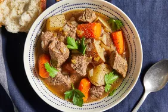

Recipe for slow cooker beef meal

Description
This easy slow cooker beef stew recipe made with potatoes, carrots, celery, broth, herbs, and spices is hearty and comforting.
You won't be slow to say 'yum'!
Ingredients
You will need these ingredients for the slow cooker beef stew.
- Stew meat:You will need 1 kg of beef stew meet.
- Vegetables:You will need carrots, potatoes, onions, and celery.
- Broth:Use store-bought broth.
- Flour:You will need plain flour.
Steps
These are the steps to follow for a hearty beef stew:
- Combine the ingredients in the slow cooker and stir.
- Cover the slow cooker and cook on low for 8 to 12 hours.